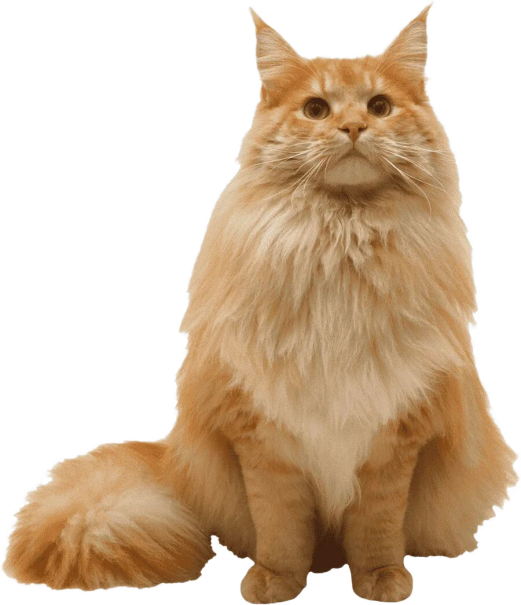
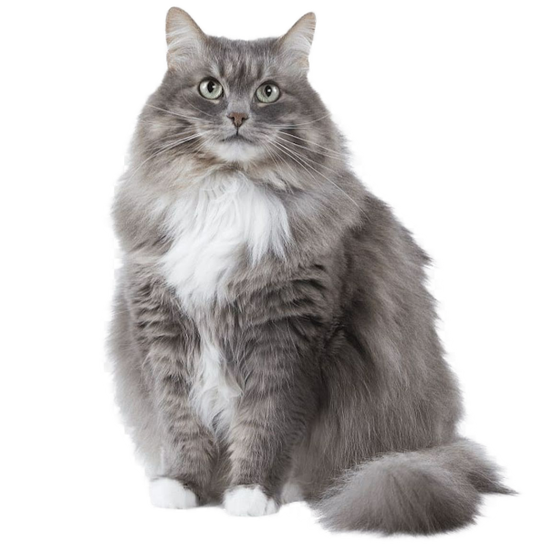
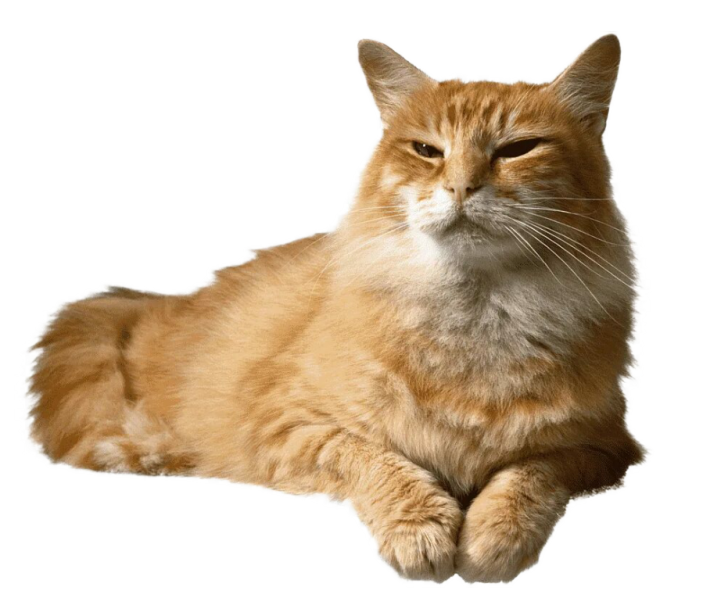
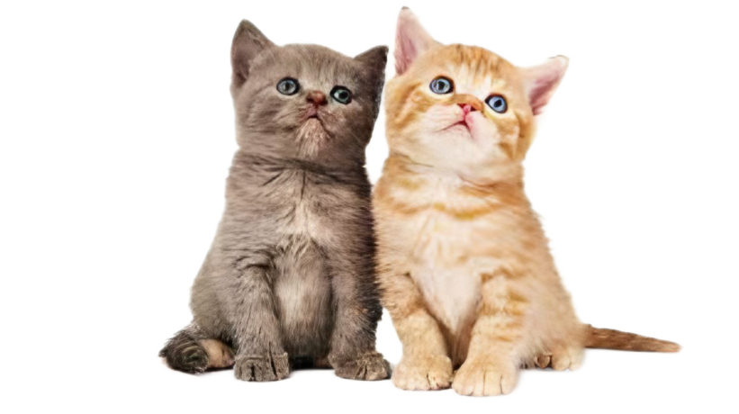
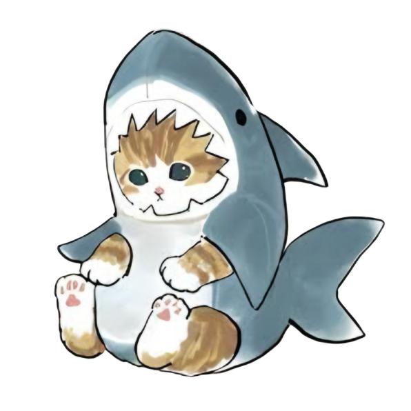
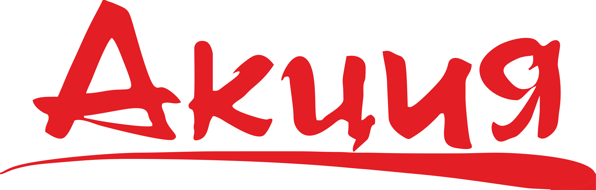
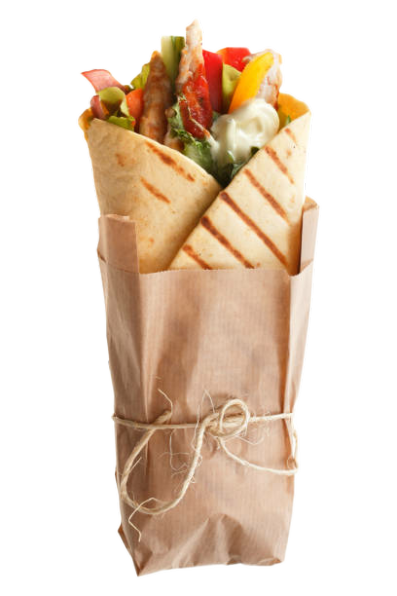

Величественная, благородная Анна!
Она пришла к нам, вернее, позвонила, спросила, достойный ли у нас приют.
Когда мы 8 раз его переделали, ей наконец понравилось, и она пришла к нам!
Она спокойная, грациозная и хитрая!

Быстрая, юлйкая миледи, блогородных кровей!
Её хотели поделить двое братьев, но она обманула их, и вместо себя, пустила на шаурму их!
А теперь, она живёт у внука в мельнице, то есть тут.

Старый, усталый творец.
Аурелиону Солу множество десятков лет, он уже стар, но до сих пор горд и надменен.
У него натура творца! Творца хаоса и разлома, к тому его душа благоговит!

Братья- А и Б.
Азарные братья - хулигана, любят устраивать дебоши и ломать ввсё и вся, но всё таки милые и хорошие. Любят друг друга и полюбят нового хозяина!
Акулка^-^
Опаснейший представитель всех вод мира, кровожадная и упутю какая милая акула!
Акулка считается самой большой и самой милой во всех водах нашего приюта

ВАЖНАЯ НОВОСТЬ!
У нас открылась новая шаурмечная! Тут всегда свежее мясо, мясные овощи и даже мясной лаваш:)

НОВОГОДНЯЯ АКЦИЯ!
При взятии любого из котиков, вы получите в подарок...
вкуснейшую, невероятно сочную, оздоровительную, изысканную
потрясающую, сногшибательную, удивительную, неиставную
шаурмую.

Заказать путёвку в приют, можно в:
Telegram: I
Discord: .meji.
whatsapp: +79659329958
Если хотите поиграть во что-то, зовите